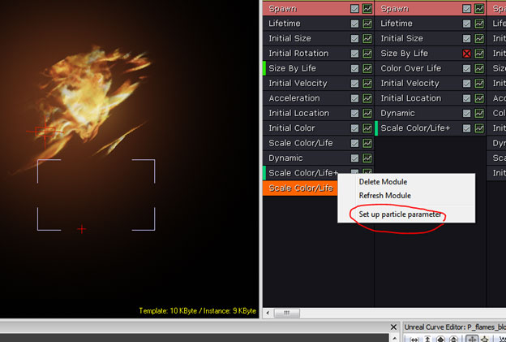
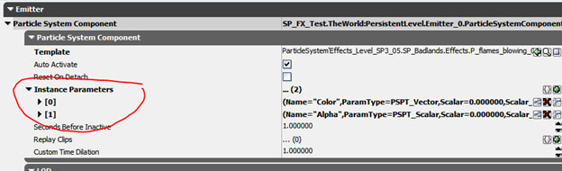
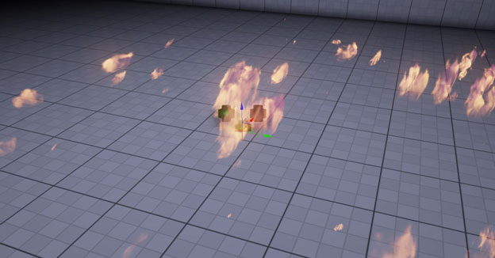
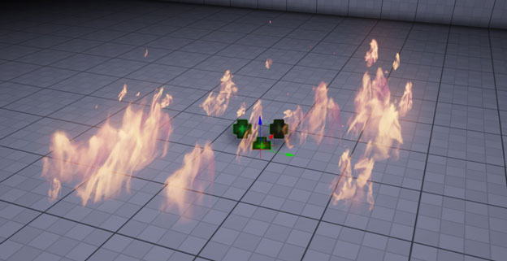
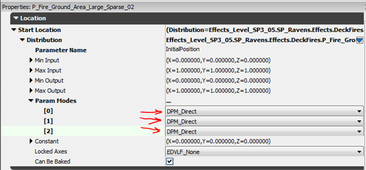

UDN
Search public documentation:
UsingInstanceParametersCH
English Translation
日本語訳
한국어
Interested in the Unreal Engine?
Visit the Unreal Technology site.
Looking for jobs and company info?
Check out the Epic games site.
Questions about support via UDN?
Contact the UDN Staff
日本語訳
한국어
Interested in the Unreal Engine?
Visit the Unreal Technology site.
Looking for jobs and company info?
Check out the Epic games site.
Questions about support via UDN?
Contact the UDN Staff
实例参数与粒子系统结合使用
概述
通过参数控制颜色

如果您选择这个模块并查看它的属性，那么您会发现已经为这个模块定义好了向量和常量值。自动将 Parameter（参数）命名为 Color 和 Alpha，可以修改这个名称，在任何粒子系统中都有多个 Parameter 名称，放置在唯一的发射器栈。
设置实例参数
下一步骤主要包含放置在场景中的单独 EmitterActor。选择 EmitterActor 并右击，然后从下拉菜单中选择 Emitter（发射器） > AutoPopulate（自动填充） 。 此时您的粒子系统可能会消失，这取决于您的 alpha/颜色设置和混合模式，属于正常现象。通过按下 F4 打开 EmitterActor 的属性窗口。
在 ParticleSystemComponent 项中的是在 Instance Parameter 项下生成的一组数据。Instance Parameter 现在应该会显示为 Bold（粗体）。
此时您的粒子系统可能会消失，这取决于您的 alpha/颜色设置和混合模式，属于正常现象。通过按下 F4 打开 EmitterActor 的属性窗口。
在 ParticleSystemComponent 项中的是在 Instance Parameter 项下生成的一组数据。Instance Parameter 现在应该会显示为 Bold（粗体）。

您将会看到两个在您的特效中指定的参数，右侧会列出它们的名字。打开参数并按照下面红色圈中编辑设置、RGB 的 Vector 和 Alpha 的 Scalar。 最初施加的特效：
最初施加的特效：
 同样的特效使用 emitterActor 上的 particleParameter 进行控制，会有更多的亮度溢出以及颜色饱和效果：
可以使用颜色参数创建一个粒子特效，并且按照需要控制颜色，不需要将特效复制/粘贴到您的软件包中就可以得到不同的等级范围内的基础颜色变体。
ParticleParameter 可以使组织和查找特效变得更加简单，可以减少内存、关卡加载时间并减少需要存储在磁盘上的文件数量。
同样的特效使用 emitterActor 上的 particleParameter 进行控制，会有更多的亮度溢出以及颜色饱和效果：
可以使用颜色参数创建一个粒子特效，并且按照需要控制颜色，不需要将特效复制/粘贴到您的软件包中就可以得到不同的等级范围内的基础颜色变体。
ParticleParameter 可以使组织和查找特效变得更加简单，可以减少内存、关卡加载时间并减少需要存储在磁盘上的文件数量。
通过参数控制位置（减少 EmitterActor 数量）

注意： 设计这个特效的用意是可以广泛应用，其中火焰的两个主要来源在发射器的原点和 X, Y 中的 fwd。使用粒子参数，我们可以修改特效的外观，而且只能将一个粒子系统加载到内存中。 下面是同一个特效使用粒子参数修改后的效果：
设置粒子参数
使用单独的发射器，我们会使用粒子参数移动我们的特效位置。 在 Cascade 中右击并将 Initial Position（初始位置）模块添加到您的 Emitter（发射器）中。
选择 Initial Location（初始位置）模块，然后在 Distribution List（分布列表）中选择 DistributionVectorParticleParameter 。
在 Cascade 中右击并将 Initial Position（初始位置）模块添加到您的 Emitter（发射器）中。
选择 Initial Location（初始位置）模块，然后在 Distribution List（分布列表）中选择 DistributionVectorParticleParameter 。
 将 Parameter Name（参数名称）更改为
将 Parameter Name（参数名称）更改为 InitialPosition 或任何您选择的参数名称，只是要使它对于该发射器是唯一的，除非您希望在多个发射器之间使用一个共享的粒子参数共享位置值。
 打开 Param Mode（参数模式）项，并将下拉项更改为 DPM_Direct
打开 Param Mode（参数模式）项，并将下拉项更改为 DPM_Direct

选择您放置在世界中的 Emitter Actor，通过右击并选择 Emitter > AutoPopulate 设置粒子参数。 按下 F4 查看 Particle System Component（粒子系统组件）项中的发射器属性。注意，Instance 参数项现在显示为粗体，而且包含一个 [0] 输入数据。该输入数据中的名称应该与您的模型中 IntialPosition 的名称匹配。 更改这个 Vector（向量）值，使其与所希望得到的位置匹配。
更改这个 Vector（向量）值，使其与所希望得到的位置匹配。
 在使用粒子参数控制位置之前：
在使用粒子参数控制位置之前：
 在使用粒子参数控制位置之后：
在使用粒子参数控制位置之后：
 这个演示说明是使用粒子参数的简单示例，该功能的用处很多，事实证明它可以为您的项目节省成本。
使用一个 EmitterActor 放置 3 个火焰，它们在 Cascade 中使用在 3 个唯一发射器上具有唯一名称的粒子参数。
这个演示说明是使用粒子参数的简单示例，该功能的用处很多，事实证明它可以为您的项目节省成本。
使用一个 EmitterActor 放置 3 个火焰，它们在 Cascade 中使用在 3 个唯一发射器上具有唯一名称的粒子参数。
 在处理复杂特效的时候为了可以明确地命名您的粒子参数必需这么做，而通过没有正确命名的参数返回到以前的特效这个过程容易令人感到困惑，可能会浪费时间推断这个参数的工作原理。可以在一个单独的发射器或多个发射器中使用多个粒子参数控制I几个模块的操作。尝试编辑颜色、位置、比例、生命周期等等。这样做有利于对不同的设置进行实验，最后实现想要得到的结果。
可以在这个特定实例中使用粒子参数到处移动场景中的特效元素的位置，减少 emitterActor 数量，这个数量反过来会改善性能和加载时间。还可以通过 matinee 和游戏代码控制粒子参数。
在处理复杂特效的时候为了可以明确地命名您的粒子参数必需这么做，而通过没有正确命名的参数返回到以前的特效这个过程容易令人感到困惑，可能会浪费时间推断这个参数的工作原理。可以在一个单独的发射器或多个发射器中使用多个粒子参数控制I几个模块的操作。尝试编辑颜色、位置、比例、生命周期等等。这样做有利于对不同的设置进行实验，最后实现想要得到的结果。
可以在这个特定实例中使用粒子参数到处移动场景中的特效元素的位置，减少 emitterActor 数量，这个数量反过来会改善性能和加载时间。还可以通过 matinee 和游戏代码控制粒子参数。